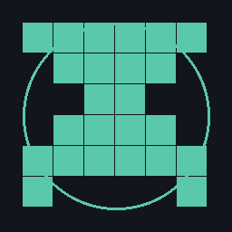

Kuli Notes
catatan proyek, alat, dan jalan-jalan · r4ngga-dev
22 Agustus 2026
Meja kerja baru
Catatan pribadi. Isinya campur: potongan pekerjaan audit, konfigurasi alat, dan sesekali foto jalan-jalan. Beberapa catatan lama sudah saya hapus karena berisi informasi klien. Repo catatan mentah ada di
github.com/kaffahrizal/kuli-notes
.